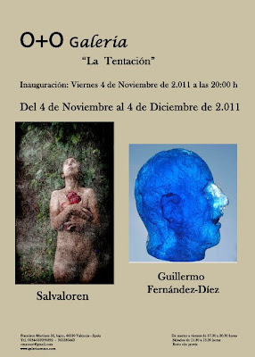

"La Tentación": Inauguración Viernes 4 de noviembre de 2011
lunes, 31 de octubre de 2011
{kind=link}

{kind=link}
“LA TENTACIÓN"
Del 4 de Noviembre al 4 de Diciembre de 2011
Inauguración viernes 4 de Noviembre a las 20:00 horas
Del 4 de Noviembre al 4 de Diciembre de 2011
Inauguración viernes 4 de Noviembre a las 20:00 horas
La Galería O+O de Valencia, dirigida por Enriqueta Hueso, termina el 2011 con la exposición titulada “La Tentación” compuesta por dos propuestas individuales de los artistas Salvalorén y Guillermo Fernández-Díez. La exposición organizada por Oriente & Occidente Gestión Cultural intenta estimular e inducir de forma tentativa al espectador, que podrá disfrutar de un amplio repertorio de pintura, escultura, fotografía y vídeo.
Salvalorén presenta su serie de fotografías Relato bíblico de la tentación en el paraíso y el videoart Eva comiendo la manzana bajo la lluvia en el Paraíso; la imagen al servicio de la reflexión sobre nuestros actos y sus consecuencias posteriores. Para las fotografías utiliza papel BIBLOS de 250 gr. emulsionado a mano e impresión digital con tintas de alta durabilidad pigmentadas. Una obra cuidada llena de frescura y armonía, con la figura de la mujer como protagonista del devenir de la humanidad.
Guillermo Fernández-Díez nos trae una muestra de su abstracción pictórica con más de una decena de coloridos cuadros y varias esculturas dedicadas al rostro humano. Entre las que destacan 10 esculturas de bronce y una cabeza de resina. Guillermo une pintura abstracta y la escultura figurativa con un trabajo donde se dan la mano desplegando su colorida y sugerente atracción.
La Galería O+O de Valencia tiene el placer de presentar a Salvalorén y Guillermo Fernández-Díez. LA TENTACIÓN ESTÁ SERVIDA.
SALVALOREN
Salva Lorén (Zaragoza, 1954) es un artista multidisciplinar que pinta, fotografía, filma y escribe. Su obra se centra en la búsqueda de la esencia, un conjunto permanente e invariable que define la naturaleza de lo representado. Para esta exposición se sirve de la imagen (fotografía y vídeo) como forma de expresión.
Su serie Relato bíblico de la tentación en el paraíso presenta el momento justo anterior al pecado: la tentación provocada por el fruto prohibido. Enfatizando sutilmente las consecuencias posteriores a la acción de comer la manzana. Una recreación del instante anterior donde se unen duda, atracción, tensión y seducción. Donde se produce una lucha interior con nosotros mismos de decisiones e indecisiones.
La mirada de Salvalorén, bajo un rigor clásico, se centra en la armonía del desnudo para así retratar desde la inocencia virginal a la personificación del pecado, pasando por la belleza de la tentación. Las imágenes, que parecen texturizadas, revelan las diferentes “pieles” de Eva, la manzana, las hojas de los árboles, la tierra… Representación del silencio y la calma que precede a la tormenta (que veremos en el vídeo que completa la muestra).
Con un trabajo muy cuidado se crea una atmósfera de ensoñación que nos traslada a un mundo de mito y leyenda, donde las fotografías cargadas de historia y literatura, presentan una luz que difumina con aroma de contraste los contornos. Barridos de color verdes, tierras y rojizos que envuelven la figura desnuda de Eva y nos trasladan al dilema. Una estética atemporal que habla de la incitación y atracción de la tentativa del pasado, presente y futuro.
Si las fotografías de Salvalorén nos muestran el momento justo antes del pecado, en el vídeoart "Eva comiendo la manzana bajo la lluvia en el Paraíso" la tentación ha ganado la partida. Un vídeo, con una duración de casi 15 minutos, donde la tentación es devorada bajo la incomodidad de la lluvia. Primeros planos de Eva comiendo la manzana mientras la tormenta se ciñe sobre ella. Una obra evocadora de percepción y recepción para el espectador.
GUILLERMO FERNÁNDEZ-DÍEZ
Guillermo Fernández-Díez (Madrid, 1966) reúne para esta exposición pintura y escultura. Confrontando su pincelada abstracta con el modelaje figurativo. Un trabajo que invita a la reflexión mediante el misterio y la fantasía.
Sus pinturas realizadas entre 2004 y 2008, nos atraen con su color y abstracción expresionista. Los trazos de sus obras eliminan cualquier rastro de figuración presentando en ocasiones aspectos geométricos con diferentes movimientos. El espacio pictórico, tratado con frontalidad, se estructura a través de pinceladas enérgicas de vivos colores. Obras de gran formato que representa el conflicto interior del artista.
Una pintura gestual y totalmente impulsiva, que se nutre de intensos colores primarios. Manchas, brochazos y salpicaduras coreografiadas por el instinto que recorren un colorido fondo de límites y continuaciones. Plasmando un lugar donde se reducen los componentes esenciales hasta aislar conceptualmente una idea.
El trabajo pictórico de Guillermo remite a lo más esencial, reduciendo sus pinturas a aspectos cromáticos, formales y estructurales. Acentúa las formas, abstrayéndolas y alejándolas de la imitación de la realidad. De esta manera, deja de lado la necesidad de la representación figurativa y la sustituye por un lenguaje propio, dotado de una carga visual de forma y color. El resultado son bellas composiciones que existen con independencia de referencias del mundo real
En el otro extremo se encuentran las esculturas del artista madrileño. Las “cabezas” de Guillermo forman un conjunto que tienen su origen en el estudio del rostro de una persona creada a partir del subconsciente. Su mirada comienza un diálogo con el espectador, mientras describe a su autor. Una cabeza de hombre, de la que nunca existió un modelo o programación previa, dejando que el carácter particular de la obra tome las riendas. Un intenso estudio que busca atrapar la singularidad del rostro, centrando una máxima atención en la cuenca de los ojos. El espacio lo ocupa una figura rotunda, que relaciona su estabilidad y firmeza con su factura de medio acabado. El resultado es una movilidad estática creada a partir de una textura convulsa y contornos quebradizos que dan forma al busto. Un modelado lleno de misterio que esculpe la frágil y efímera figura humana.
Óscar García García